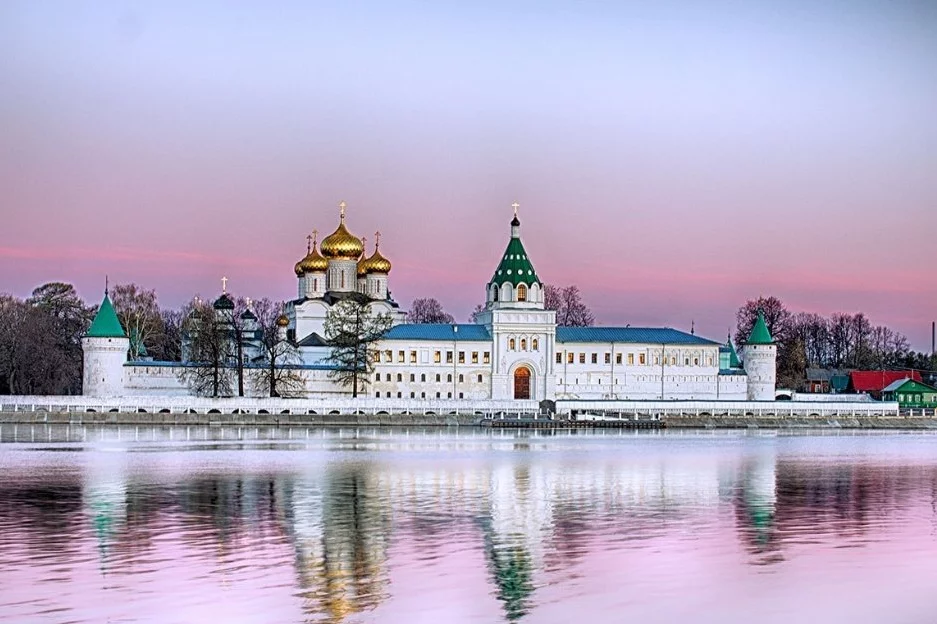

История

Святое болото, расположенное в Чухломском районе Костромской области, является уникальным природным заказником, известным своей древней историей и значимостью как экологического, так и культурного наследия. Святое болото тесно связано с Чухломским озером и является истоком реки Святицы, которая питает озеро, поддерживая уникальную гидрологическую систему региона. Святица — река, питаемая родниками, которые славяне называли «святиками». От них и болото, и река получили своё название. Но это не единственная достопримечательность Чухломского района.
На карте XIX века на территории Чухломского, Галичского и Солигаличского округа, как и на всей территории Костромского уезда, находилось большое количество храмов. Костромская губерния славилась не только как уникальный природный заказник, но и уникальной архитектурой, памятниками архитектуры, многие из которых оказались под угрозой исчезновения.
Исторический центр Костромы
Исторический центр Костромы – это уникальный пример гармоничного соединения архитектуры, истории и духа русской провинции, расположенный на живописных берегах Волги. Он является символом богатого культурного наследия России, сохранившимся на протяжении веков.
Кострома, основанная в 1152 году, сыграла значительную роль в становлении Русского государства. Исторический центр города сформировался в XVIII веке, когда после разрушительного пожара 1773 года была утверждена регулярная планировка. Радиально-кольцевая структура, напоминающая лучи солнца, не только придала городу уникальный облик, но и воплотила в себе стремление к упорядоченности и гармонии, характерное для того времени.